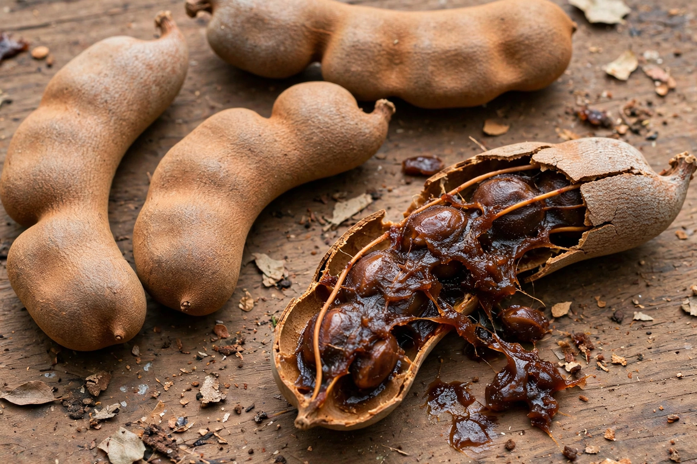

Tamarind

Scientific name: Tamarindus indica
Family: Fabaceae
Native to: Tropical Africa
Tamarind (Tamarindus indica) is a leguminous tree bearing edible fruit that is indigenous to tropical Africa and naturalised throughout the tropics, especially South and Southeast Asia and Mexico. The name derives from Arabic tamr hindī, "Indian date". The tree produces brown, pod-like fruits containing a sticky, sweet-and-sour pulp surrounding hard seeds.
Culinary use
Tamarind pulp is a defining souring agent in many cuisines: it flavours Indian curries and chutneys, Thai pad thai and som tam-adjacent dressings, Filipino sinigang, Indonesian sayur asem, and Mexican aguas frescas and candies. In the West it is a key ingredient of Worcestershire sauce and HP Sauce. The pulp is exceptionally rich in tartaric acid; unripe fruit is very sour, while fully ripe pulp is sweeter. Young leaves, flowers and seeds are also eaten in various regions.
Other uses and cultivation
The tree is long-lived and drought-tolerant, planted for shade as well as fruit; India and Thailand are major producers. Tamarind pulp has traditional medicinal uses as a laxative, the seeds yield a polysaccharide used industrially, and tamarind wood is dense and durable. The fruit's acidity also makes it a traditional polish for brass and copper.